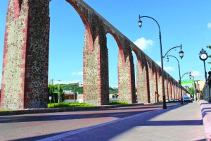

About Me

My name is Esteban Rubén Mangas Calva. I am from Querétaro, México and serve a mission in Oaxaca, México. I have a small business with my wife Sara of personalized and creative stationary, agendas and vynil. In the future we want to expand our business by adding web development for others business or entrepreneurs online pages. I'm a fan of Harry Potter, Pokémon and Anime. I hope to work someday in a position or company related to my hoobies. I am passionate about tech and videogames, and I love to learn more about programming and web development.
Querétaro, México
Querétaro is a state in the center of México. Querétaro de Arteaga, the state capital, is a city full of beautiful and rich architecture like the aqueduct in the picture known as 'Los Arcos'. It is a place with a great history fundamental for the overall country history. Actually is a fast developing city thanks to the bloom of the nearshoring and the growing companies that are investing in expanding its business in Querétaro and in the center of México.